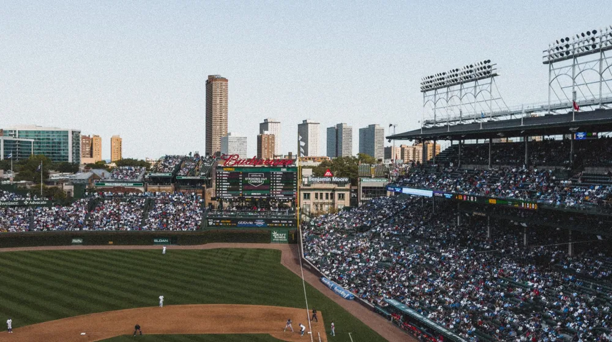

Kia 대 삼성, 단순한 야구 경기가 아니다? 숨겨진 진짜 승부의 의미!
사진: Pixabay / Pexels (무료 이미지, 출처 표기)
혹시 오늘 검색창에서 'Kia 대 삼성'을 보고 고개를 갸웃하셨나요? 평범해 보이는 이 두 대기업의 이름이 어째서 대한민국을 들썩이게 만들었을까요? 단순히 재계 라이벌전을 떠올리셨다면 오산입니다! 오늘 이 두 이름 뒤에는 상상을 초월하는 열정과 드라마, 그리고 수십 년 역사가 응축된 뜨거운 이야기가 숨어 있습니다. 지금부터, 그 베일을 함께 걷어보겠습니다!

어느 날 갑자기 포털 사이트 실시간 검색어 순위에 'Kia 대 삼성'이라는 키워드가 떴다면, 당신은 어떤 상상을 하셨을까요? 자동차와 전자제품의 혁신적인 기술 대결? 아니면 숨겨진 비즈니스 거래가 수면 위로 떠오른 것일까요? 하지만 잠시 스크롤을 내려보면, 그곳에는 전 국민의 희로애락이 담긴 또 다른 스토리가 펼쳐집니다. 바로 대한민국 프로야구(KBO) 리그에서 수십 년간 이어져 온, 불꽃 튀는 라이벌전의 상징, 'KIA 타이거즈'와 '삼성 라이온즈'의 대결입니다!
'Kia 대 삼성', 왜 지금 대한민국이 들썩이나?
대한민국에서 'Kia 대 삼성'이라는 키워드가 핫이슈로 떠오르는 순간은 대부분 야구 시즌, 특히 두 팀 간의 중요한 경기가 있을 때입니다. 단순한 한 경기의 승패를 넘어, 이 대결은 각 팀의 연고지인 광주(KIA)와 대구(삼성) 시민들의 자존심이자, 대한민국 야구 역사를 수놓은 수많은 명승부의 집약체이기 때문입니다. 두 팀의 경기는 단순한 스포츠 이벤트가 아닙니다. 그것은 지역감정을 넘어선 순수한 열정의 분출구이자, 한 주의 스트레스를 날려버리는 짜릿한 드라마 그 자체입니다.
특히 시즌 막판 순위 다툼이 치열하거나, 포스트시즌에서 만나기라도 한다면, 전국은 그야말로 뜨거운 용광로처럼 들끓습니다. 야구팬들은 직관을 위해 수십 킬로미터를 마다하지 않고 달려가고, TV 앞에서는 손에 땀을 쥐며 경기를 지켜봅니다. 도대체 무엇이 이들을 이토록 열광하게 만드는 걸까요? 단순한 공놀이를 넘어선, 그 이면에 숨겨진 스토리를 지금부터 파헤쳐 봅니다.
단순한 야구 경기를 넘어선 '전쟁'의 서막
KIA 타이거즈와 삼성 라이온즈의 라이벌 역사는 KBO 리그의 시작과 함께했다고 해도 과언이 아닙니다. 이들은 리그 최다 우승을 다투는 전통의 강호이자, 영원한 숙명의 라이벌로 불립니다. 호남을 대표하는 KIA와 영남을 대표하는 삼성은 단순한 지역 라이벌을 넘어, 한국 프로야구의 전성기를 이끌었던 전설적인 팀들입니다. 1980년대 해태 타이거즈(KIA의 전신)의 V10 신화, 그리고 2010년대 삼성 라이온즈의 통합 4연패 신화는 각 팀 팬들의 가슴에 영원히 지워지지 않을 자랑스러운 기록으로 남아있습니다.
두 팀 간의 경기는 마치 한 편의 전쟁과 같습니다. 선수들은 승리를 위해 모든 것을 쏟아붓고, 팬들은 목이 터져라 응원하며 선수들과 함께 호흡합니다. 한 점 한 점에 희비가 엇갈리고, 하나의 플레이에 울고 웃는 팬들의 모습은 단순한 야구팬이 아닌, 팀의 역사와 함께 성장해 온 동반자의 모습입니다. 이들의 대결은 단순한 스포츠 경기를 넘어, 지역의 정체성과 자부심이 걸린 한판 승부인 셈입니다.
숫자로 본 '불꽃 튀는 대결': 역대 전적과 기록
그렇다면 과연 이 두 거인은 지금까지 어떤 기록들을 쌓아왔을까요? 숫자로 보는 그들의 불꽃 튀는 대결은 더욱 흥미롭습니다. (2023시즌 종료 기준)
놀랍지 않나요? KBO 리그 우승 횟수는 삼성이 앞서지만, 한국시리즈 우승 횟수는 KIA가 압도적입니다. 이는 KIA가 포스트시즌에서 유독 강한 '단기전의 왕자'임을, 반면 삼성은 정규시즌에서 꾸준히 좋은 성적을 내는 '리그의 지배자'였음을 보여주는 대목입니다. 이처럼 서로 다른 강점을 가진 두 팀의 대결은 그래서 더욱 예측 불허의 재미를 선사합니다.
팬들의 열정, 그 속에 숨겨진 드라마
KIA와 삼성 경기가 열리는 날, 야구장은 그야말로 축제의 장으로 변모합니다. KIA 팬들은 뜨거운 함성과 '사랑한다 KIA'를 외치며 붉은 물결을 이루고, 삼성 팬들은 '승리를 향해'를 부르며 푸른 물결로 맞섭니다. 응원가 하나하나, 선수들의 플레이 하나하나에 팬들의 희비가 극명하게 갈리는 모습은 보는 이들에게도 전율을 선사합니다.
특히 두 팀은 전설적인 선수들을 많이 배출하며 팬들의 '정체성'을 강화해왔습니다. KIA의 김성한, 선동열, 이종범부터 삼성의 이만수, 양준혁, 이승엽까지, 이들은 단순한 스포츠 스타를 넘어 한 시대를 풍미한 아이콘이었습니다. 이들의 활약과 두 팀 간의 명승부는 팬들의 추억 속에 살아 숨 쉬며, 세대를 넘어 이어지는 '야구 DNA'를 만들어냈습니다. 때로는 억울한 오심에 분노하고, 때로는 극적인 역전승에 환호하며, 팬들은 이 모든 드라마의 일부가 됩니다.
'Kia 대 삼성'이 우리에게 던지는 메시지
결국 'Kia 대 삼성' 키워드가 던지는 메시지는 단순히 스포츠 경기의 승패를 넘어섭니다. 그것은 치열한 경쟁 속에서도 존중과 열정을 잃지 않는 스포츠맨십, 그리고 공동체의 자부심과 연대감을 확인하는 과정입니다. 팬들은 팀의 성공을 통해 대리만족을 느끼고, 때로는 좌절을 통해 인생의 쓴맛을 배우기도 합니다. 그리고 이 모든 경험은 다음 경기를 향한 기대감과 희망으로 이어집니다.
두 거인의 대결은 우리에게 '노력의 가치', '팀워크의 중요성', 그리고 '포기하지 않는 정신'을 끊임없이 일깨워 줍니다. 사회생활에서든 개인의 삶에서든, 우리는 늘 '대결'과 '경쟁'의 연속 속에서 살아갑니다. 'Kia 대 삼성' 경기를 통해 우리는 그 속에서 어떻게 즐거움을 찾고, 어떻게 좌절을 딛고 일어서야 하는지에 대한 작은 교훈을 얻을 수 있습니다.
마치며
오늘 우리가 함께 파헤쳐 본 'Kia 대 삼성'의 대결은 단순한 스포츠 경기를 넘어, 우리 삶의 축소판이자 뜨거운 열정의 증거였습니다. 예측불허의 드라마가 펼쳐지는 그라운드에서, 우리는 때로는 좌절하고 때로는 환호하며 삶의 희로애락을 느낍니다. 다음 번 'Kia 대 삼성' 경기가 펼쳐질 때, 그저 스쳐 지나가는 경기가 아닌, 숨겨진 이야기에 귀 기울여 보세요. 분명 당신의 심장을 더욱 뜨겁게 만들 것입니다!
🔗 이 글도 함께 보면 좋아요: 군의관, 대체 왜 지금 뜨거울까? 숨겨진 그들의 진짜 이야기
관련 추천 상품
이 포스팅은 쿠팡 파트너스 활동의 일환으로, 이에 따른 일정액의 수수료를 제공받습니다.